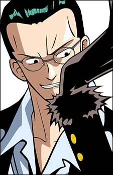
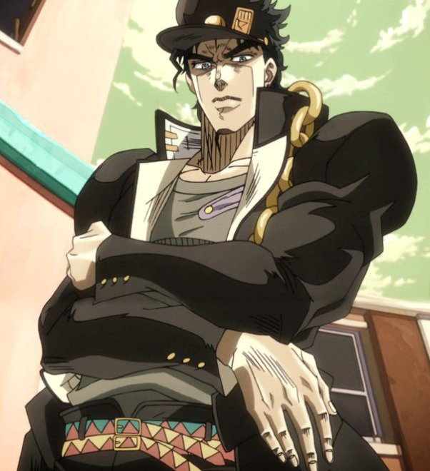

ЗОЖ
Простые причины тяжёлых заболеваний, о которых часто забывают
Многие серьёзные болезни начинаются не с вирусов или сложных генетических мутаций, а с привычек и факторов, на которые мы почти не обращаем внимание.
- Дефицит витамина D: влияет на иммунитет, кости, мышцы и настроение.
- Стресс и повышенный кортизол: хронический стресс повышает давление, ослабляет иммунитет, усиливает воспалительные процессы.
- Антибиотики: чрезмерное или неконтролируемое применение нарушает баланс микрофлоры.
- Сидячий образ жизни: отсутствие физической активности негативно сказывается на сердце, сосудах, мышцах и суставах.
- Побочные эффекты от трав: даже натуральные средства могут иметь побочные действия при неправильном применении.
Наверх
Онлайн бизнес
Как продвигать онлайн-бизнес бесплатно: три метода, которые реально работают
Продвижение без бюджета — реально, если действовать грамотно.
- Вирусные короткие видео: цепляй внимание за 5 секунд через динамику, эмоции и неожиданные элементы.
- Сарафанное радио: делись контентом с друзьями, проси отзывы и рекомендации.
- Холодные рассылки: коротко и по делу, с дружелюбным призывом к действию и показом ценности.
Наверх
Психология людей
Жалкие тактики манипуляторов: как их распознать в разговоре

- Пассивная агрессия через насмешки: едкие шутки, сарказм, «невинные» подколки.
- Обвинение других и игра в жертву: манипулятор никогда не признаёт ошибок, переводит ответственность на других, выставляет себя пострадавшим.
- Подмена понятий, игнор и лицемерие: любой неудобный вопрос встречает игнорированием, подменой темы или агрессией.
- Красивая речь для завоевания доверия: словесная «шелуха» создаёт иллюзию компетентности.
Три признака закомплексованного человека
- Самоирония и подколы за внешность: скрытая неуверенность проявляется в постоянных лёгких подколах.
- Привязанность к стандартам красоты: стремление соответствовать чужим ожиданиям, сравнение себя с идеализированными образами.
- Неискренность ради удобства окружающих: говорят то, что хотят услышать другие, жертвуют собой для «вписывания».
Секреты красоты моделей с обложек
- Уход за здоровьем: сон, питание и физическая активность создают фон для всего остального.
- Прическа под форму лица: гармонирует с чертами лица, подчеркивает достоинства.
- Одежда под фигуру: стильная одежда улучшает пропорции, создаёт уверенность.
Признаки интроверта: как распознать человека, который любит тишину
Интроверты не ищут внимания, их поведение выдаёт тонкие признаки.

- Узкий круг общения: ценят качество контактов, шумные компании утомляют.
- Постоянная задумчивость: анализируют ситуации и события.
- Сдержанность эмоций: эмоции проявляются умеренно, внутреннее равновесие сохраняется.
- Глубокие темы вместо болтовни: предпочитают осмысленные разговоры и личностный рост.
Наверх